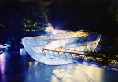
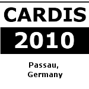
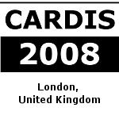
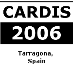
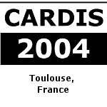
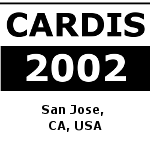
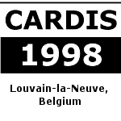
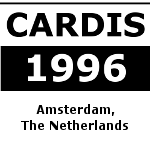
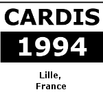

CARDIS - Previous Conferences | |||||
|
CARDIS was occuring every two years from 1994 and became an annual event since 2010. Below are the links to the events pages (or local copies) when they are available. |
|||||
|
| |||||
CARDIS 2018, Prague, Czech Republic |
CARDIS 2018, Montpelier, France |
||||
CARDIS 2017, Lugano, Switzerland |
CARDIS 2016, Cannes, France |
CARDIS 2015, Bochum, Germany |
|||
CARDIS 2014, Paris, France (local archive) |
CARDIS 2013, Berlin, Germany (local archive) |
 CARDIS 2012, Graz, Austria (local archive) |
|||
CARDIS 2011 Leuven, Belgium (local archive) |
 (local archive) | (local archive) | |||
|  (local archive) | (local archive) | (local archive) | |||
| (local archive) |  |  | |||
|  | |||||